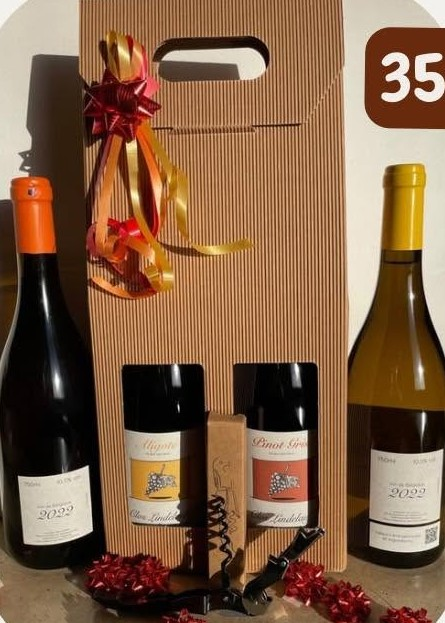

Aligoté
Natuurwijn

Natuurwijn · Hakendover
Een Belgische wijngaard, duurzaam en familiaal.
Natuurlijke gisten, niet gefilterd of geklaard, geen sulfiet toegevoegd: een pure wijn die de druif laat spreken.
Een wijngaard zonder chemische onkruidbestrijding, met respect voor bodem en natuur.
Een klein domein waar elke fles door de handen van de familie gaat, van wijnstok tot glas.
Het domein
Dit bijzondere project begon in 2018. De wijngaard werd in 2019 aangeplant in Hakendover, bij Tienen, en beslaat een halve hectare, deels Aligoté, deels Pinot Gris.
Omringd door een dichte haag is het een afgesloten gebied, een echte "clos".
Onze wijnen
Natuurwijn
Oranjewijn

Actie van het moment
35 €
Bestel de feestdoos« Clos Lindelauf groeit stap voor stap,
maar het avontuur is nog maar net begonnen. »
Bestellen
Laat ons weten wat u wenst, wij nemen contact met u op voor de betaling en het afhalen.
Verkooppunten
Onze flessen zijn ook verkrijgbaar bij deze partners.
Ons vinden
Clos Lindelauf ligt in Hakendover, op de grens tussen Vlaanderen en Wallonië.